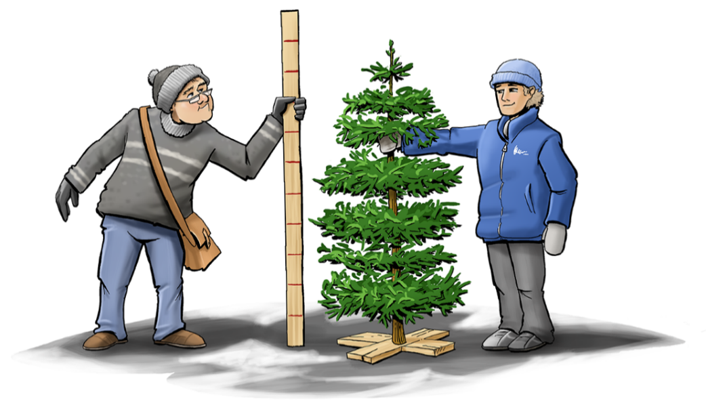
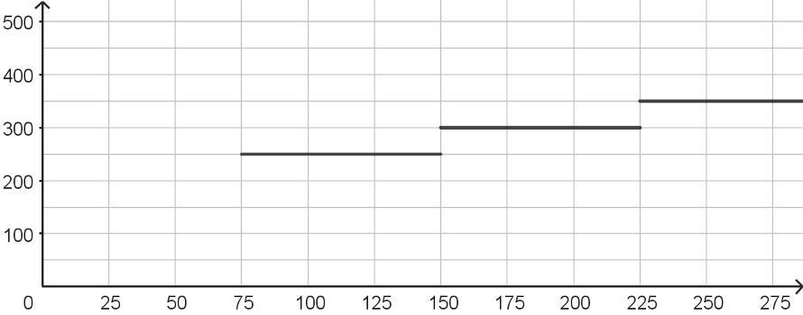
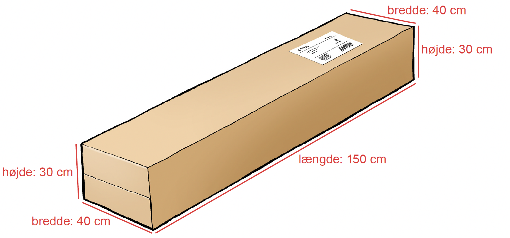
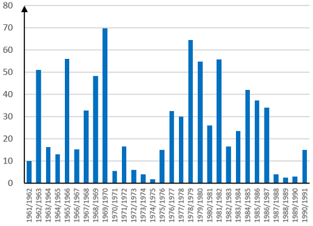
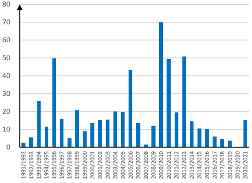
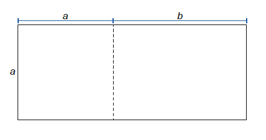
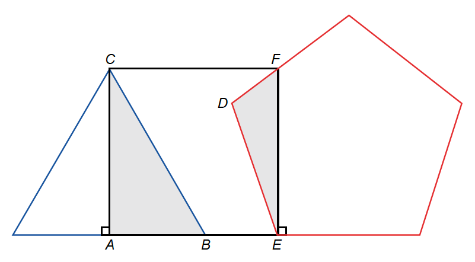

Kl. 10.00-13.00
Kære elev
Prøven består af 7 opgaver. Du har 3 timer til at løse dem.
Ved hver opgave står der, hvor mange point den højst kan give.
Prøven kan i alt højst give 66 point. Du bestemmer selv, hvilken rækkefølge du laver opgaverne i, og hvor lang tid du vil bruge på hver af dem.
Det er vigtigt, at du begrunder dine svar i alle opgaver.
Det betyder, at du i hver opgave skal vise eller forklare, hvordan du er nået frem til dit svar. Du kan fx begrunde dit svar med regneudtryk eller tegninger med tilhørende skriftlige forklaringer. Det kan være forskelligt fra opgave til opgave, hvordan du begrunder.
En del af de point, du kan få i hver opgave, kommer fra dine begrundelser.
I de fleste opgaver kan du ikke få det højeste antal point, hvis du ikke begrunder dit svar, selv om dine resultater er rigtige.
I nogle af opgaverne skal du beregne et antal eller en størrelse. I andre opgaver skal du vise, hvordan du finder frem til et bestemt resultat eller afgøre, om en påstand er sand eller falsk.
Der er også opgaver, hvor du skal løse et matematisk problem ved at undersøge. I disse opgaver forventer vi ikke, at du på forhånd kender en metode, du kan bruge til at løse problemet. Ordet ’undersøg’ signalerer, at du selv skal finde på en god måde at løse problemet på ved at bruge matematik, du kender.
God arbejdslyst.
Styrelsen for Undervisning og Kvalitet
1
Priser på juletræer
Opgave 1 giver højst 12 point|
Frederik køber et juletræ på et julemarked. Prisen afhænger af træets højde. Han skal betale 1,50 kr. pr. centimeter. Han køber også en juletræsfod til 50 kr.

Tegninger: Hans Ole Herbst
|
| 1.1 |
Hvad koster et juletræ på 185 cm og en juletræsfod i alt?
|
||
|
Frederik betaler i alt 350 kr. for et juletræ og en juletræsfod.
1.2
Hvor højt er juletræet?
|
|
Rosa køber et juletræ på et andet julemarked. Grafen viser, hvad juletræerne koster uden
juletræsfod.
Pris (kr.)
 Højde (cm) |
| 1.3 |
Forklar, hvad grafen viser om priser for juletræer.
|
||
| 1.4 |
Sammenlign priserne på Frederiks og Rosas julemarkeder, og find ud af, hvor det er billigst
at købe juletræer. Brug evt. svararket.
|
||
2
Krav til pakker
Opgave 2 giver højst 9 point|
Frederik vil sende en pakke med et fragtfirma. Tegningen viser pakken, der har form som en
kasse.

Tegning: Hans Ole Herbst
|
Firmaet stiller to krav til de kasseformede pakker, de fragter.
Det ene krav er, at pakkens rumfang skal være mindre end 225.000 cm3.
|
2.1
Overholder Frederiks pakke kravet til rumfang?
Det andet krav står i den blå boks.
2.2
Overholder Frederiks pakke kravet
i den blå boks?
|
| 2.3 |
Undersøg og giv et eksempel på, hvilke mål kassens længde, bredde og højde kan have haft.
|
||
3
Påstande om tilbud
Opgave 3 giver højst 8 point|
Rosa, Tobias, Asma og Frederik kommer med hver sin påstand om nogle tilbud, de har set i
en reklame.
|
||||
| 3.1 |
Undersøg hver af de fire elevers påstande. For hver påstand skal du forklare, hvorfor den er
sand, eller hvorfor den er falsk.
|
||
4
Snedække-døgn
Opgave 4 giver højst 11 point|
De to diagrammer herunder viser data om snedække-døgn i danske vintre. Diagrammet til venstre viser data om 30 vintre i perioden 1961-1991. Diagrammet til højre viser data om 30 vintre i perioden 1991-2021. Du kan også se de to datasæt i regnearksfilen SNE_DEC_2025. |
Et snedække-døgn er et døgn, hvor mere end 50 % af jordoverfladen er dækket af sne. |
|
Data om 30 vintre fra 1961 til 1991
Antal snedække-døgn

Data om 30 vintre fra 1991 til 2021
Antal snedække-døgn
 |
| 4.1 |
Hvor mange af vintrene i de to perioder tilsammen har haft mere end 60 snedække-døgn?
|
||
| 4.2 |
Sammenlign variationsbredden i datasættene fra de to perioder. Du kan enten aflæse cirkatal
på diagrammerne eller bruge de præcise tal i regnearksfilen.
|
||
| 4.3 |
Du skal vise med beregning, at det gennemsnitlige antal snedække-døgn pr. vinter er faldet
ca. 30 % fra den første til den anden periode.
|
||
| 4.4 |
Hvad vil du forvente, at variationsbredden og det gennemsnitlige antal snedække-døgn pr.
vinter bliver i perioden fra 2021-2051? Du skal begrunde dit svar med beregninger.
|
||
5
Hvor meget juletærte til hver gæst?
Opgave 5 giver højst 10 point|
Rosa foreslår, at der skal sidde 9 gæster ved hvert
bord, og at hver gæst skal have
13
tærte.
5.1
Du skal vise med tegning eller beregning, at der skal
være 3 tærter til et bord med 9 gæster, hvis klassen
følger Rosas forslag.
5.2
Hvor meget tærte skal der være til et bord med n gæster, hvis hver gæst skal have
13 tærte?
|
|
Frederik foreslår, at der skal sidde
10 gæster og være 4 tærter ved hvert
bord.
5.3
Hvor meget mere tærte får hver gæst i
Frederiks forslag sammenlignet med
Rosas forslag?
|
| 5.4 |
Undersøg og giv et eksempel på, hvor mange gæster og hvor mange hele tærter, der kan
være ved hvert bord, så Asmas forslag bliver gennemført.
|
||
6
Arealet af et særligt rektangel
Opgave 6 giver højst 9 point|
Tegningen viser et rektangel. De variable a og b beskriver sidelængderne i rektanglet.
Rektanglet ændrer størrelse, hvis a og b ændrer værdi.  |
| 6.1 |
Hvor stort er arealet af rektanglet, hvis a = 5, og b = 7?
|
||
| 6.2 |
Giv et eksempel på, hvilke værdier a og b kan have, hvis arealet af rektanglet er 24.
|
||
| 6.3 |
Skriv et udtryk med a og b, som man kan bruge til at beregne arealet af rektanglet, uanset
hvilke værdier a og b har.
|
||
| 6.4 |
Undersøg, hvilke værdier a og b kan have, hvis arealet af rektanglet er 72.
Skriv så mange forskellige værdier som muligt. |
||
7
Hvor store er vinklerne?
Opgave 7 giver højst 7 point|
Tegningen viser en blå trekant, en sort firkant og en rød femkant. Trekanten, firkanten og
femkanten er regulære polygoner. De tre regulære polygoner er placeret, så de danner to nye
trekanter, ABC og DEF, der ikke er regulære.
|
|
 |
Vinklerne i en regulær
polygon er lige store.
Vinkelsummen i en polygon med n kanter er (n – 2) · 180°. |
| 7.1 |
Du skal finde frem til størrelsen på så mange af de i alt 6 vinkler i trekant ABC og DEF som
muligt. Du skal begrunde dine svar med beregninger og viden om figurer - ikke kun med mål
fra et geometriprogram.
|
||
Regneark til opgave 4
Excel
Du kan tilgå regnearket som en Sheets-fil via linket nedenfor, hvis I anvender Sheets-filer på din skole.
Google Sheets
Det følgende er ikke en del af prøven:
Dette prøvesæt er omfattet af ophavsretten, jf. ophavsretslovens § 1.
Prøvesættet må alene anvendes til den på prøvesættet anførte prøve.
Al anden anvendelse af prøvesættet, herunder visning eller deling f.eks. via
internettet, sociale medier, portaler og bøger, udgør en krænkelse af Børne- og
Undervisningsministeriets og evt. tredjemands ophavsret og er ikke tilladt.
Overtrædelse af ophavsretten kan være erstatningspådragende og/eller strafbart.
Prøvesættet kan dog, efter at prøven er afsluttet, anvendes til undervisningsbrug på
uddannelser m.v. omfattet af den lovgivning, som Styrelsen for Undervisning og Kvalitet
administrerer.